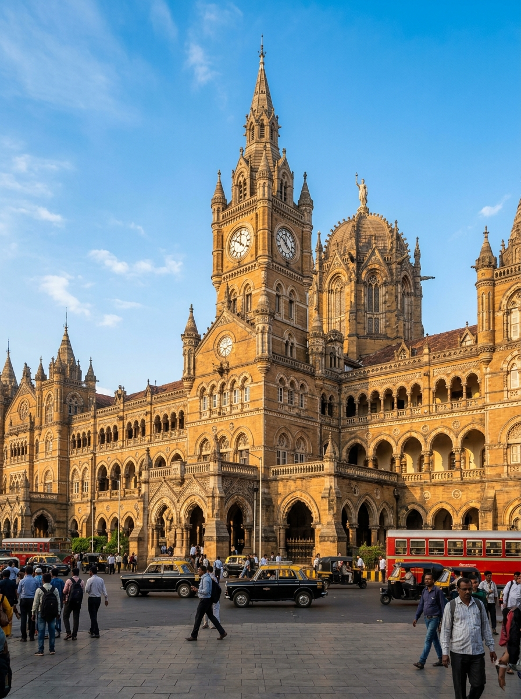
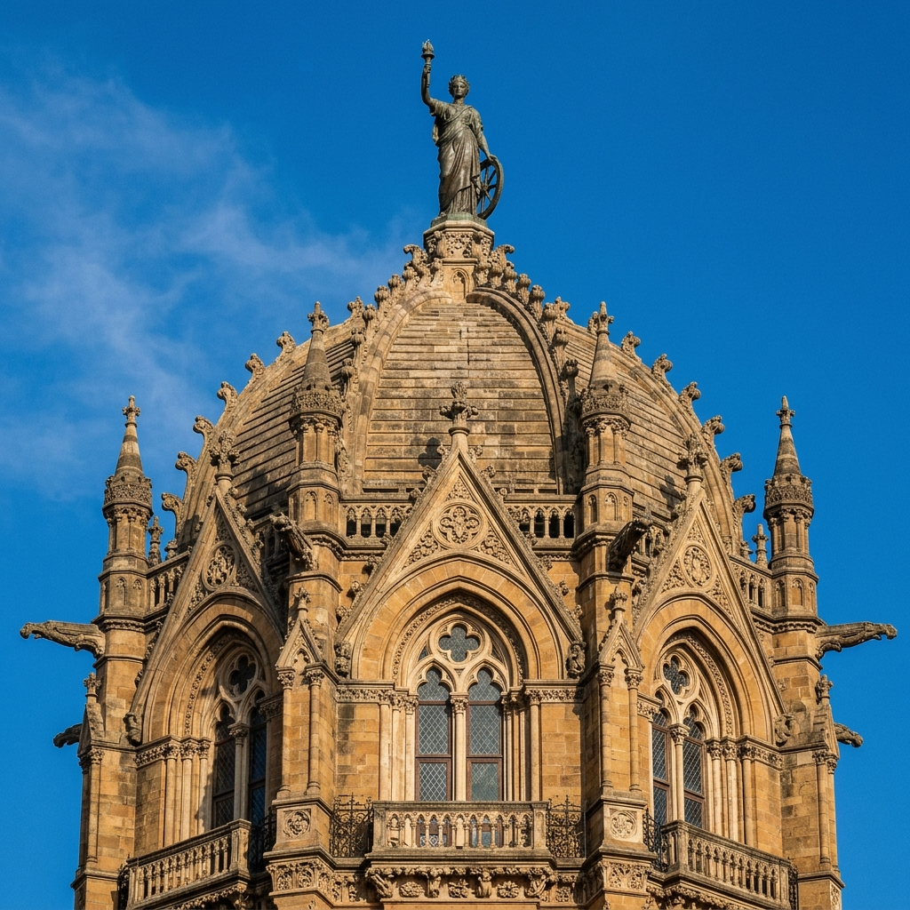
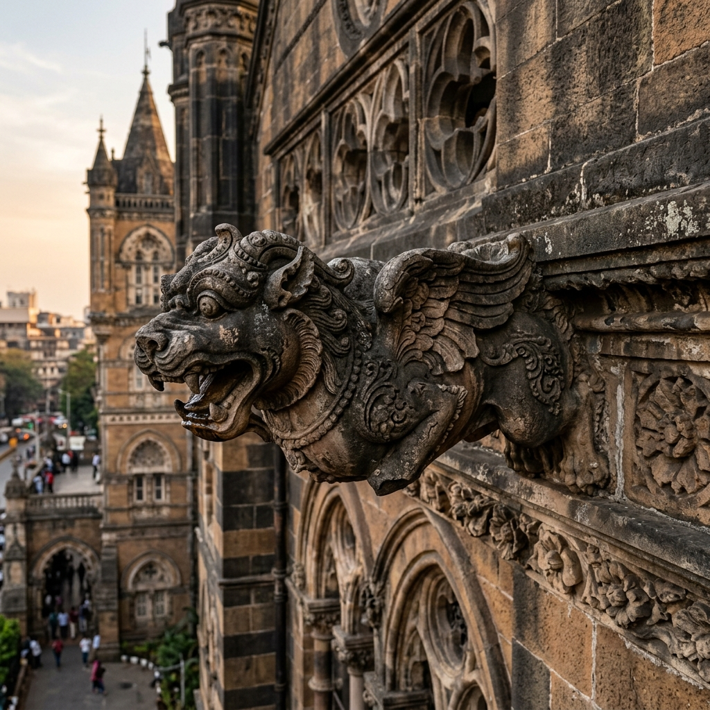
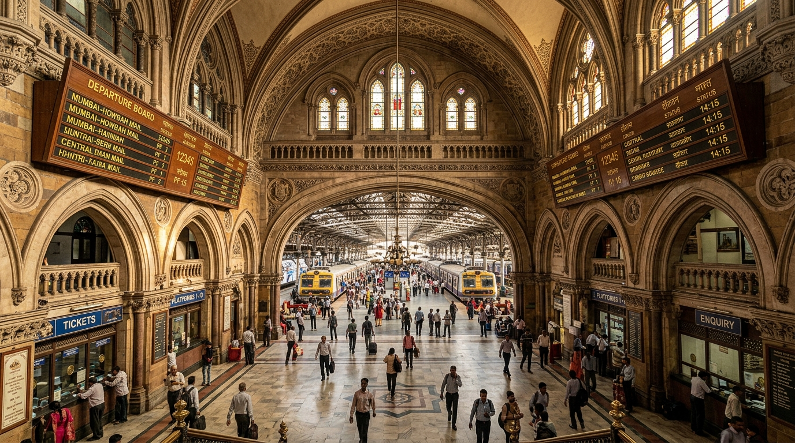
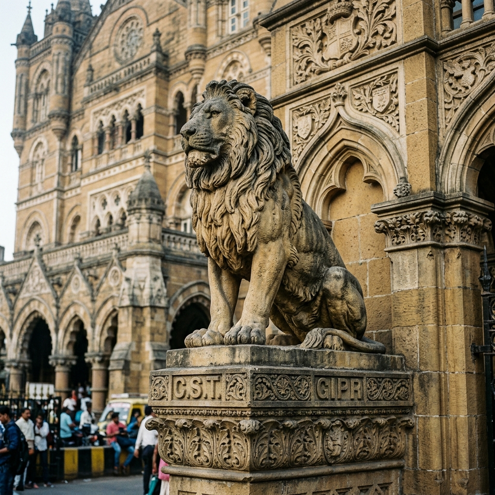
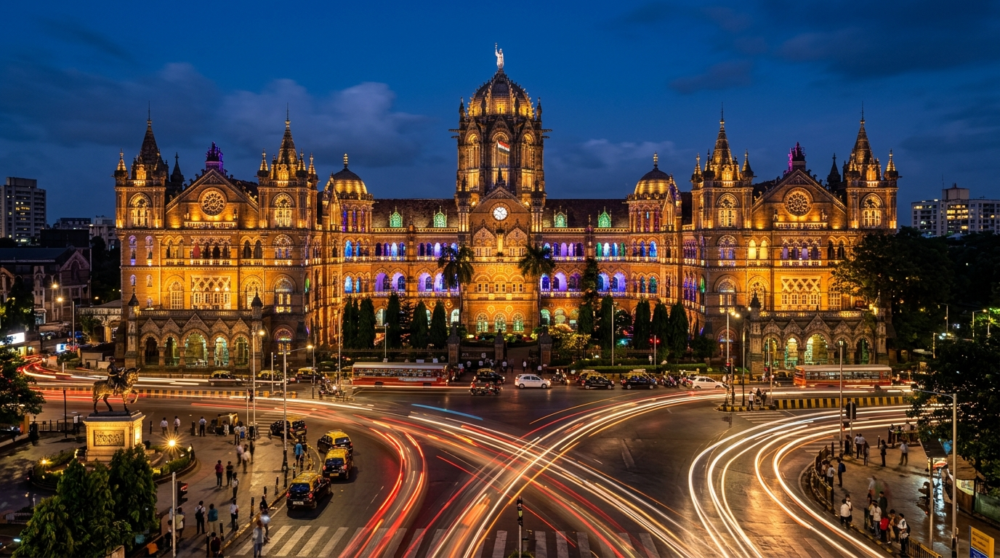
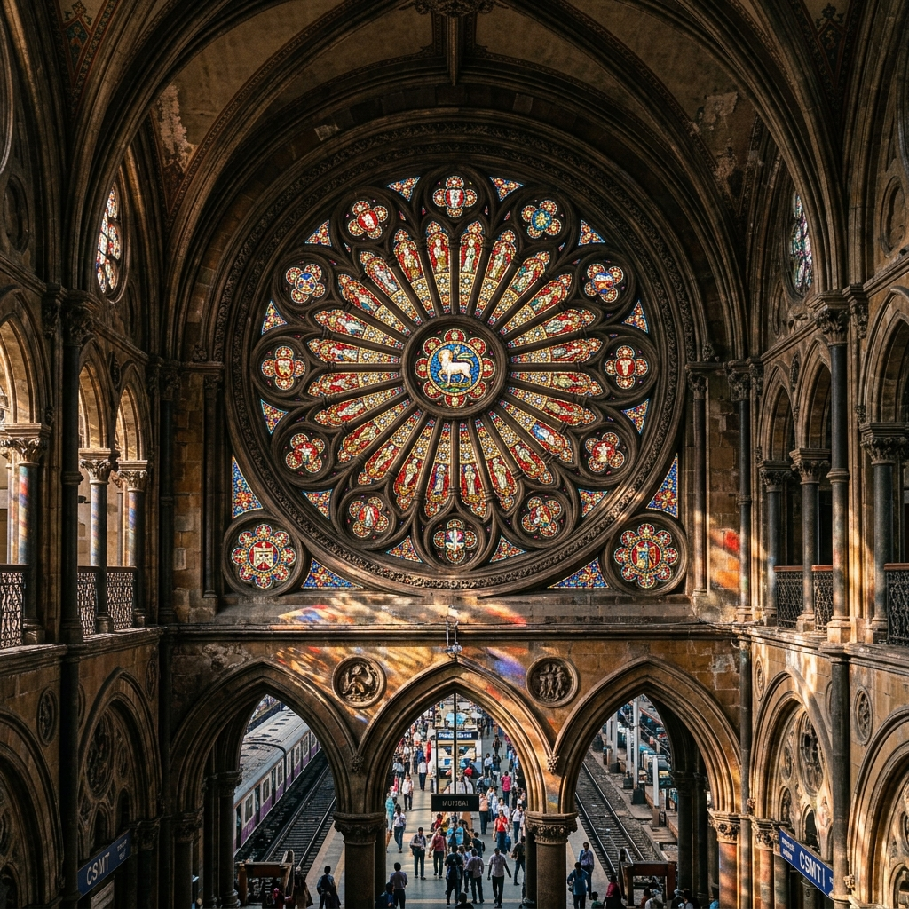

Fort, Mumbai
Neighbourhood
A working railway station carved like a cathedral — where British Gothic Revival stonework and Indian craftsmanship were built, quite literally, side by side.
Portrait of Chhatrapati Shivaji Maharaj (1630–1680), founder and sovereign of the Maratha Empire.
Shivaji Bhonsle (1630–1680) founded the Maratha Empire and was crowned Chhatrapati — sovereign — at Raigad Fort in 1674. Revered in Maharashtra for his military strategy, administrative reforms, and resistance to Mughal and Adilshahi expansion, he remains one of the most celebrated figures in Indian history.
The terminus was renamed in his honour in 1996 — replacing its colonial-era name, Victoria Terminus — and extended to "Chhatrapati Shivaji Maharaj Terminus" in 2017, aligning Mumbai's busiest railway landmark with the legacy of the king who built an empire on Maratha soil.
Commissioned by the Great Indian Peninsular Railway (GIPR) as its headquarters, the terminus replaced the older Bori Bunder station and was designed to announce Bombay's arrival as a global mercantile port.
English architectural engineer Frederick William Stevens won the commission after outdoing rival proposals with a design that fused High Victorian Gothic with Indian palace architecture. He worked alongside engineer Wilson Bell and artist Axel Haig, and was paid ₹16.14 lakh for a decade of work.
Construction began in May 1878 and finished in 1887–88, timed to mark Queen Victoria's Golden Jubilee — hence its original name, Victoria Terminus. At roughly £250,000, it was the most expensive building Bombay had ever seen.
Historians classify CSMT as High Victorian Gothic Revival, modelled on late-medieval Italian precedents, but its ground plan, ornament, and silhouette borrow so heavily from Indian tradition that it's often called simply "Bombay Gothic."
Unlike a typical symmetrical Gothic building, CSMT's asymmetrical, sprawling ground plan echoes the layout of a traditional Indian palace complex rather than a European cathedral.
Built primarily from buff-coloured Kurla and Porbandar stone with blue-black Malad basalt trim — a distinctly regional material palette rather than imported European stone.
Stevens used a masonry dome — a first for a secular Gothic Revival building — turning a functional transport hub into a monument with the presence of a place of worship.
Walk the exterior and the European Gothic vocabulary is unmistakable — pointed arches, ribbed vaults, flying buttresses, and a skyline of spires.
Rising roughly 160 ft, the octagonal ribbed dome is crowned by a 16-ft statue known as the "Lady of Progress," holding a torch aloft — added purely for dramatic silhouette, with no structural purpose.
Sharply pointed Gothic arches frame the windows and entrances, while slender corner turrets and pinnacles break up the roofline in true High Victorian fashion.
A clock face over 10 ft in diameter anchors the main façade — beneath it, an empty niche once held a statue of Queen Victoria, removed after the station's 1996 renaming.
Drainage spouts carved as dogs, crocodiles, rams, and lizards line the dome and roofline — a hallmark Gothic device repurposed with distinctly Indian fauna.
Coloured stained-glass windows and elaborate wrought-iron and brass railings run throughout the interior, a level of decorative detail rare in a functioning transit building.
CSMT is celebrated by UNESCO as an outstanding example of two cultures meeting: British architects designed it, but Indian craftsmen carved and built it — weaving in motifs and techniques from India's own architectural traditions.
Carvings across the façade depict Indian flora and fauna — monkeys, peacocks, and lotus motifs — alongside the more European gargoyles, blending two decorative languages into one.
A stone lion (representing the United Kingdom) and tiger (representing India) flank the main entrance — a deliberate symbol of the two nations meeting at this gateway.
The building's turrets, domes, and irregular, courtyard-driven layout draw directly from Mughal and Indo-Saracenic palace architecture rather than a standard European rail-terminus plan.
The buff Kurla and Porbandar stone was sourced regionally, and much of the fine detail carving was executed by local artisans working from Stevens' designs — a genuine collaboration rather than an imported style.
More than a monument, CSMT is a living headquarters — the nerve centre of the Central Railway network and one of the busiest stations on Earth.
In 2004, UNESCO inscribed the terminus on the World Heritage List under Criteria (ii) and (iv), recognising it as an outstanding example of the meeting of two cultures — Victorian Gothic Revival architecture fused with the living traditions of Indian craftsmanship, still functioning as the city's principal railway hub.
A century and a half of history, laid out the way the station itself tracks time.
A curated photographic journey through Mumbai's premier Gothic masterpiece.

Main façade & clock tower
Central dome
Gargoyle detail
Platform hall, interior arches
Stone lion, entrance
Illuminated façade, night view
Stained glass windowPhotographic showcase of Chhatrapati Shivaji Maharaj Terminus, Mumbai.